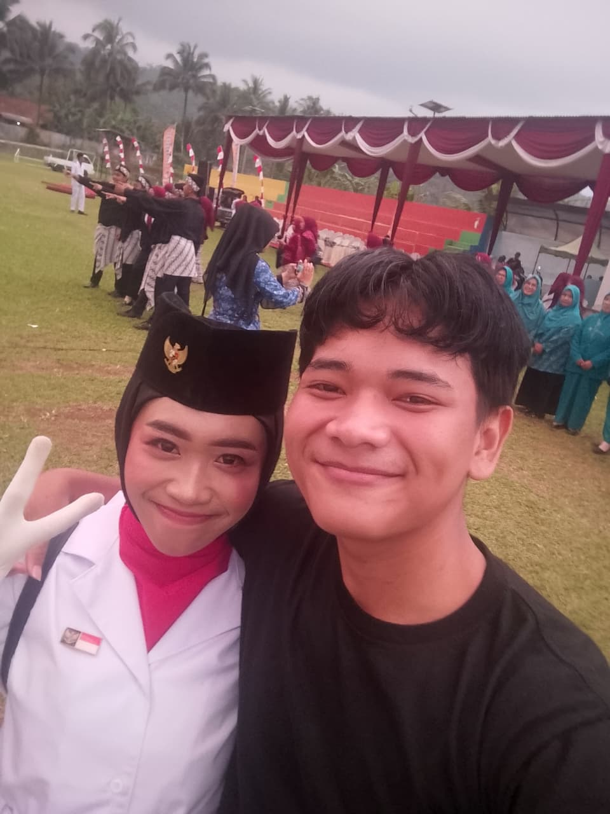
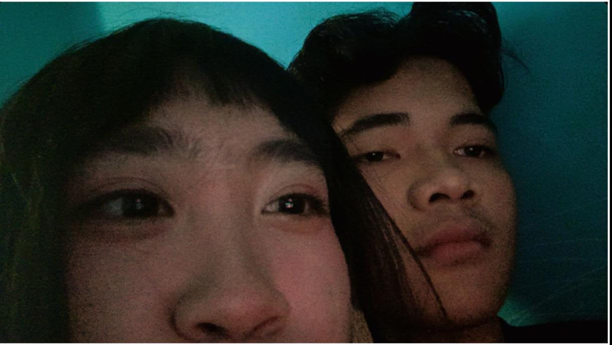
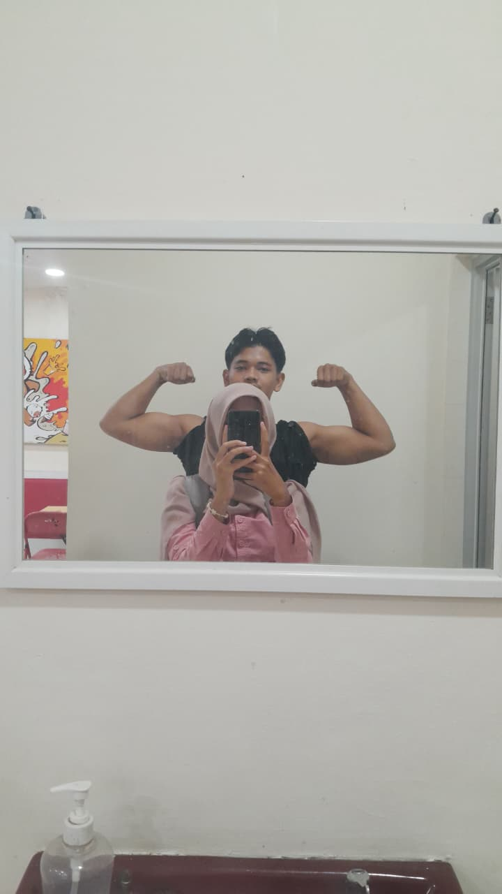
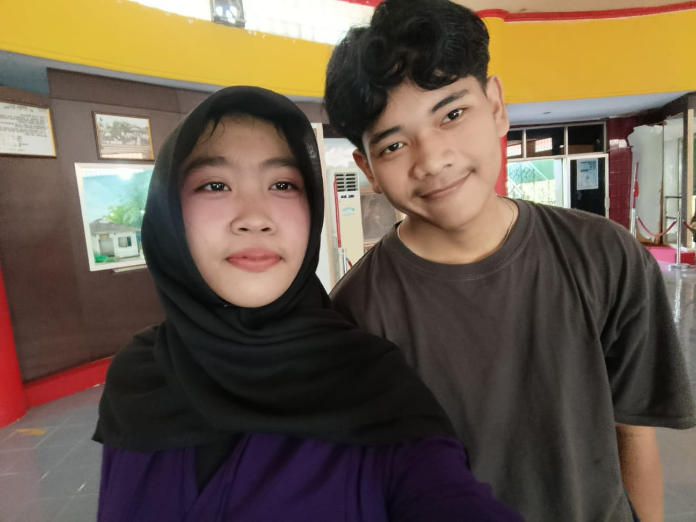
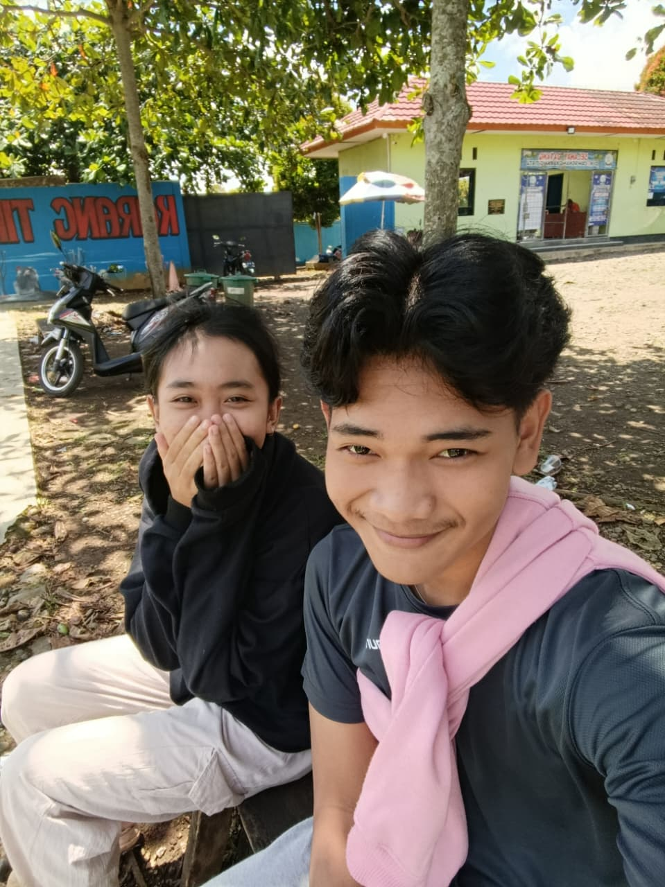
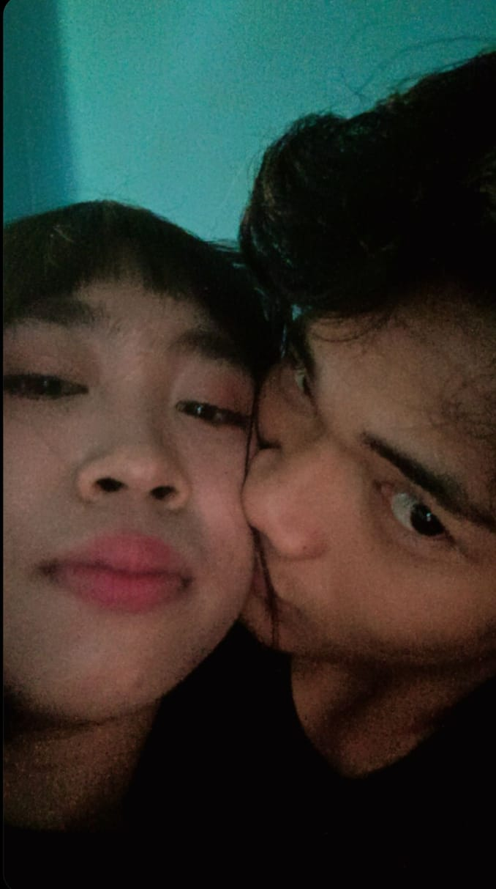
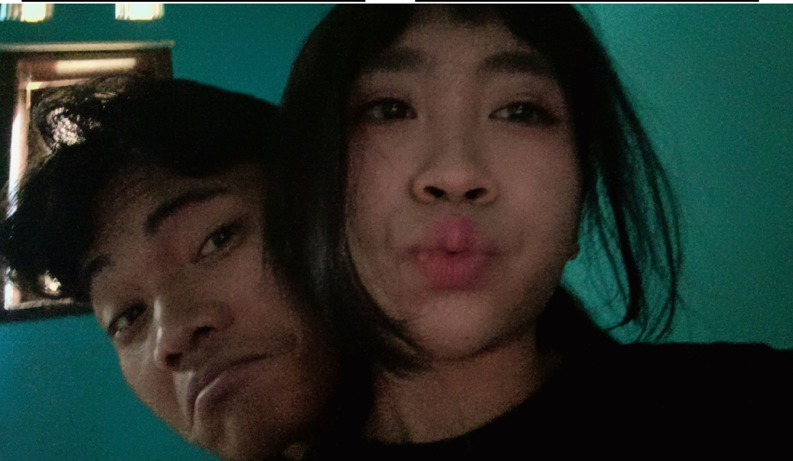

Foto kenangan 01

first date ♡
Album kenangan kitaa
♡♡ Anggit dan Riska ♡♡
atau
♡♡ Amri dan Risha ♡♡

my love
Tidak semua kenangan harus berasal dari hari istimewa. Kadang, momen paling sederhana justru yang paling ingin kita ingat.

first date ♡

mixue date

monumen date

swimming date

senyummu yang kusuka

dan masih banyak lagi ♡
✦ Setiap foto menyimpan cerita yang tidak akan terlupakan ♡
Masih banyak kenangan kecil yang ingin kusimpan bersamamu ♡
and our story goes on... ♡
For the boy who was once my little crush. ♡
Semuanya berawal dari masa SMP. Ada seseorang yang diam-diam aku kagumi sejak kelas 7. Bukan karena aku punya niat untuk menjadikannya pacar, apalagi berharap suatu hari kami akan bersama. Aku hanya suka melihatnya, mengaguminya dari jauh, dan menyimpan perasaan kecil itu sendirian sampai akhirnya lulus SMP.
Lucunya, setelah masuk SMK, hidupku berjalan seperti biasa. Aku mulai mengenal beberapa orang, dekat dengan beberapa laki-laki, dan perlahan menjalani hari-hariku sendiri. Sampai suatu hari, tanpa sengaja aku berpapasan dengannya di halte bus.
Pertemuan singkat itu tiba-tiba mengingatkanku pada seseorang yang pernah aku sukai. Aku sempat berpikir, "Ah, nggak mungkin juga bisa dekat sama dia. Sekolah kami saja sudah berbeda."
Aku bahkan nggak pernah membayangkan kalau suatu hari nanti cerita kami akan sampai sejauh ini.
Sampai akhirnya, setelah aku lulus SMK, sesuatu yang nggak pernah aku duga terjadi. Dia tiba-tiba menghubungiku.
Jujur, aku speechless. Bayangkan, seseorang yang dulu hanya bisa aku kagumi diam-diam, sekarang justru menjadi orang yang mengirimiku pesan.
Dari obrolan sederhana, kami mulai sering bermain Roblox bersama, lanjut Discord, saling bercerita, bahkan menghabiskan waktu sampai larut malam. Hampir setiap hari ada saja hal yang kami bicarakan. Sampai-sampai aku pernah dimarahi karena terlalu sering begadang. Tapi waktu itu rasanya bodo amat, karena ada seseorang yang membuat malam-malamku terasa lebih menyenangkan.
Sampai suatu hari, dia mengungkapkan perasaannya.
Dan tanpa perlu berpikir panjang, aku menerimanya dengan bahagia.
Siapa sangka, seseorang yang dulu hanya menjadi crush masa SMP ternyata benar-benar menjadi pacarku?
Rasanya seperti salah satu angan-angan kecil yang tiba-tiba menjadi nyata.
Seiring berjalannya waktu, kami mulai mengenal satu sama lain lebih dalam. Bukan cuma sisi baik, tetapi juga sisi yang mungkin nggak selalu menyenangkan untuk dilihat.
Ada saatnya dia kecewa dengan sisi burukku. Ada juga saatnya aku menemukan hal-hal dari dirinya yang nggak selalu sesuai dengan bayanganku. Tapi kami pernah melewati semuanya. Kami belajar menerima, saling memaafkan, dan tetap memilih untuk bersama.
Aku tahu, aku bukan perempuan yang selalu mudah dimengerti. Emosiku terkadang berubah-ubah, terkadang terlalu banyak berpikir, dan terkadang sulit mengendalikan perasaan sendiri.
Tapi mungkin dia nggak pernah benar-benar tahu bahwa di balik semua itu, aku juga sedang belajar.
Belajar memahami dirinya, belajar menjadi pasangan yang lebih baik, belajar membuka hati, dan belajar menunjukkan rasa sayang dengan cara yang sebelumnya belum pernah aku lakukan.
Dia adalah orang pertama yang membuatku berani memanggil seseorang dengan sebutan "sayang", berani bersikap manja, dan ingin melibatkan seseorang dalam hampir seluruh bagian kehidupanku.
Aku mungkin belum sempurna, tapi perasaanku selalu sungguh-sungguh.
Tentu saja, perjalanan kami nggak selalu dipenuhi tawa.
Ada satu malam yang sampai sekarang masih tersimpan jelas di ingatanku.
7 Mei 2026, pukul 22.54.
Malam itu, semuanya terasa berubah begitu cepat. Aku sedang bercerita seperti biasanya, sampai tiba-tiba dia mengatakan ingin break.
Aku terdiam.
Rasanya seperti disambar petir. Tanganku gemetar, tubuhku terasa berbeda, dan air mataku jatuh begitu saja. Aku nggak tahu harus menjawab apa. Aku hanya bisa menangis sambil mencoba memahami apa yang baru saja kudengar.
Hubungan yang sebentar lagi akan mencapai satu tahun, yang selama ini aku pikir masih akan terus berjalan, ternyata bisa sampai di titik seperti itu.
Aku tahu kami sama-sama punya kesibukan. Aku dengan kuliahku, dia dengan pekerjaannya. Kami sama-sama lelah setelah menjalani hari masing-masing. Tapi jauh di dalam hati, aku masih ingin punya sedikit waktu untuk saling bercerita, mendengar hal-hal kecil tentang hari kami, dan merasa bahwa kami masih menjadi bagian penting dalam kehidupan satu sama lain.
Kami akhirnya kembali membaik. Namun, beberapa bulan kemudian, ada lagi hal-hal yang membuatku sedih. Bahkan ketika aku sendiri sempat meminta break, jawabannya justru membuatku semakin terluka.
Sampai akhirnya, permintaan untuk berpisah itu datang lagi.
Kali ini aku mencoba mengiyakan, meskipun sebenarnya hatiku belum siap. Aku masih memohon, masih berharap, bahkan rela meminta satu kesempatan untuk bertemu dan berbicara secara langsung.
Dan ketika akhirnya kami bertemu, perasaan yang selama ini berantakan terasa sedikit lebih tenang. Dia mengatakan nggak ingin break ataupun putus.
Aku pun masih ingin bersamanya.
Mungkin karena itulah, sampai sekarang aku masih mengingat semua kejadian itu dengan begitu jelas. Bukan karena aku ingin terus mengingat rasa sakitnya, tetapi karena malam-malam itu menjadi bagian dari perjalanan yang pernah kami lalui.
Aku nggak menulis semua ini untuk menyalahkanmu. Aku juga nggak sedang berusaha membela diriku sendiri.
Aku tahu kamu punya lelahmu sendiri. Aku tahu mungkin ada saat-saat ketika sikapku membuatmu merasa sulit untuk memahami aku. Dan aku sadar, mencintai seseorang juga berarti belajar memahami hal-hal yang sebelumnya nggak kita mengerti.
Aku sedang berusaha memperbaiki diriku. Mengurangi kebiasaan overthinking, belajar mengendalikan emosi, nggak selalu menuruti suasana hati, dan mencoba melihat sesuatu dari sudut pandangmu.
Tapi kalau boleh jujur, terkadang aku masih merindukan hal-hal kecil dari kita yang dulu.
Aku rindu ketika kita punya banyak cerita untuk dibagikan. Ketika bermain bersama terasa menyenangkan, ketika obrolan sederhana bisa berlangsung sampai malam, dan ketika aku nggak perlu menunggu terlalu lama hanya untuk mendapatkan sedikit waktumu.
Aku nggak meminta kita kembali menjadi dua orang yang sama seperti dulu. Aku hanya berharap kita nggak kehilangan keinginan untuk terus mengenal satu sama lain.
Aku ingin kita sama-sama bertumbuh, bukan saling merasa sendirian dalam hubungan ini.
Terlepas dari semua yang pernah terjadi, aku tetap bersyukur pernah dipertemukan denganmu.
Kamu bukan hanya seseorang yang pernah menjadi crush-ku sejak SMP. Kamu juga menjadi orang pertama dalam banyak hal di hidupku. Banyak pengalaman yang sebelumnya belum pernah aku rasakan, akhirnya bisa aku lalui bersamamu.
Ada banyak kenangan kecil yang mungkin terlihat biasa saja bagi orang lain, tetapi punya tempat tersendiri di hatiku.
Bermain Roblox, mengobrol lewat Discord, tertawa karena hal-hal nggak penting, menghabiskan malam bersama, sampai pertemuan-pertemuan yang selalu ingin aku ingat.
Hal-hal sederhana itu ternyata bisa menjadi sesuatu yang begitu berharga ketika dilakukan bersama orang yang kita sayangi.
Aku nggak tahu bagaimana cerita ini akan berakhir. Aku juga nggak tahu akan seperti apa kita beberapa tahun ke depan.
Tapi satu hal yang aku tahu, bertemu denganmu adalah salah satu bagian paling menyenangkan dalam hidupku.
Dulu aku hanya seorang anak SMP yang mengagumi seseorang dari kejauhan tanpa pernah membayangkan akan memilikinya sebagai bagian dari cerita hidupku.
Dan sekarang, aku punya begitu banyak kenangan bersamamu untuk dikenang.
Terima kasih sudah pernah hadir, sudah menjadi bagian dari hari-hariku, sudah mengenalkanku pada banyak pengalaman pertama, dan sudah menjadi seseorang yang begitu berarti bagiku.
Kalau suatu hari nanti kita mengingat kembali perjalanan ini, aku harap kita bisa tersenyum dan mengingat bahwa pernah ada dua orang yang saling menemukan, saling belajar, dan punya begitu banyak cerita untuk dikenang.
You were once just a boy I admired from afar, but somehow, you became someone I got to love this close.
And honestly, I'm so grateful that our paths crossed.
With all my love,
from the girl who once had a little crush on you. ♡
Terima kasih untuk setiap canda, tawa, luka, petualangan kecil, dan hari biasa yang terasa istimewa karena ada kamu. Foto-foto dan cerita ini hanya sebagian kecil dari kenangan yang telah kita buat. Bagian paling kusuka adalah mengetahui bahwa masih akan ada banyak momen indah yang sedang menunggu kita.
Love you sayangku cintaku duniaku gantengku suamiku ♡
Terima Kasih sudah menjadi bagian dari perjalanan ini